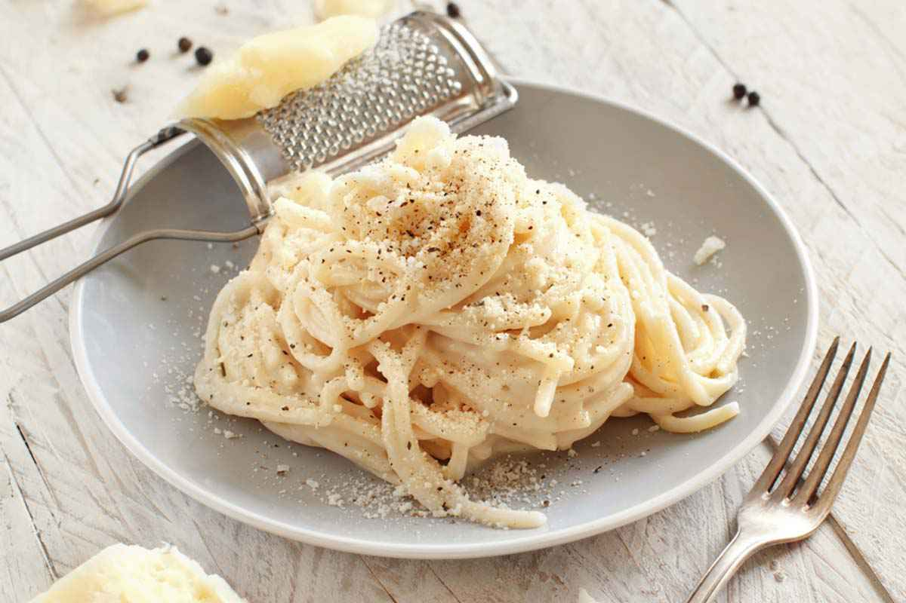

Cacio e pepe

What is Cacio e pepe?
Cacio e pepe pasta is an important dish that is part of the ancient Roman culinary tradition and anyone who has been to a proper italian trattoria or restaurants in Rome with typical local cuisine knows it well.
Besides the pasta, only three ingredients are used to prepare it: pepe nero (black pepper), pecorino romano cheese and olive oil.
This recipe makes two servings.
Ingredients
- 200 grams (7 ounces) of spaghetti type pasta
- 125 grams (4.4 ounces) of grated pecorino romano
- A heap teaspoon (5 grams) of freshly ground black pepper
- Extra virgin olive oil
- Kosher salt
Steps
- Start by preparing the cheese and pepper. Crush the peppercorns in a mortar until they become a fine powder or alternatively use a hand grinder. Grate the cheese in a large bowl and set both aside.
- Boil water in a pot and salt it. Add the pasta and stir it once it has softened.
(pro tip: add about half to one tablespoon of salt for every pound of pasta or around three quarts of water to boil a full pound)
Kill the fire and drain the pasta about 2-1 minutes before tender for an al dente texture. Reserve 3/4 cup of the cooking water.
- In a frying pan or wok add about 2 tablespoons of extra virgin olive oil over medium heat. Add the pepper and cook, swirling and tossing, until the pepper starts to sizzle, for about 30 seconds.
- Add 1/2 cup pasta water to the pan and bring it to a simmer. Add the drained pasta and mix it well until the sauce coats the pasta. Reduce the heat to low and add the grated Pecorino, stirring and tossing with tongs until melted and incorporated. Plate the Cacio e pepe to warmed deep plates and serve.
(pro tip: In Italian etiquette, pasta is the first course of a meal. Pasta is never eaten as a side dish. So for an authentic experience (la vera originale!) don't mix it with another course or sides)
- Optional step: If desired, grate more Pecorino over the pasta as you serve.